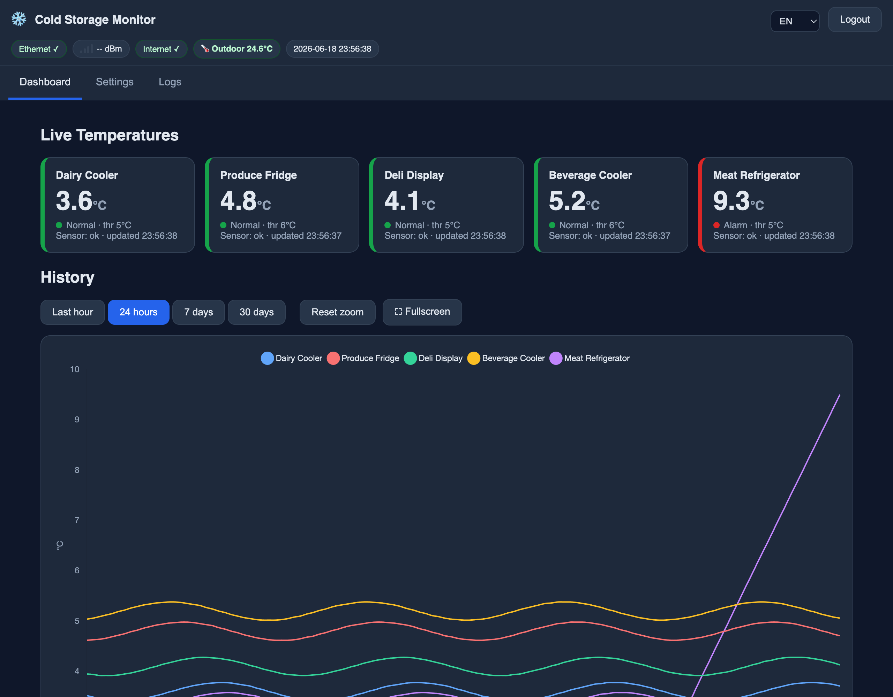

A complete temperature-monitoring system for up to five refrigerators plus an outdoor sensor. Live dashboard, 30 days of history, and instant e-mail alarms — served straight from the device over Ethernet. No subscriptions, no gateway, no cloud. Fully customizable for almost any monitoring and e-mail-alert need — not just refrigerators.

Real dashboard — four units cold & in range, one in alarm.
Built for reliability in a real facility — local-first, resilient to network loss, and simple enough to run unattended for months. The sensors, thresholds, and e-mail alert rules adapt to whatever you need to monitor — fridges, freezers, server rooms, and more.
Real-time readings for five refrigerators and an outdoor sensor, colour-coded normal / warning / alarm at a glance.
Every minute logged to a circular database in flash. Zoom and pan an interactive chart across 1 hour to 30 days.
Per-fridge thresholds with hysteresis and confirmation counts. Get an e-mail the moment a unit drifts out of range.
Rock-solid PoE-friendly Ethernet with automatic WiFi fallback and static-IP support for set-and-forget deployment.
Push new firmware across the network with password-protected OTA — no USB cable, no downtime at the rack.
Session-based authentication with multiple accounts, idle timeout, and protected settings — all on-device.
Fully translated interface with right-to-left support, switchable instantly from the dashboard.
The entire web UI is embedded in firmware and served from the device. Your data never leaves the building.
Hardware watchdog, sensor-fault and disconnection detection, and storage-health reporting keep it running 24/7.
A single WT32-ETH01 (ESP32 + Ethernet) does the sensing, logging, alerting, and web serving. Open any browser on the LAN and you're in.
DS18B20 probes on a 1-Wire bus sample each fridge once a minute.
The ESP32 evaluates thresholds, logs to flash, and triggers alarms.
Wired Ethernet (or WiFi fallback) puts it on any network — reachable at monitor.local.
An embedded web dashboard and e-mail alerts keep you informed anywhere on-site.
Embedded C++ on a battle-tested microcontroller, with a lightweight vanilla web stack and zero runtime cloud dependencies.
Full firmware, wiring guides, and architecture docs are on GitHub. Flash it, wire your sensors, and you're monitoring in an afternoon.